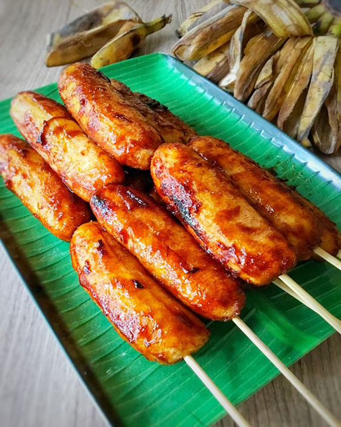
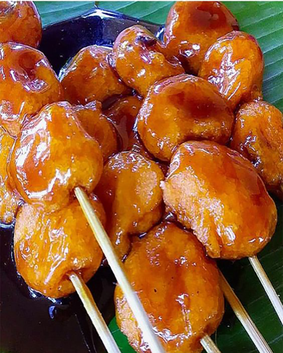

classic filipino merienda

banana turon recipe
Ingredients
- 6 pieces bananas saba or plantains, cut in half (lengthwise)
- 1 cup jackfruit ripe, sliced
- 1 1/2 cup sugar
- 12 pieces lumpia wrapper
- 2 cups cooking oil
Instruction
- Roll the banana on the sugar plate and ensure that the banana is coated with enough sugar
- Place the banana with sugar coating in the spring roll wrapper and add some ripe jackfruit
- Fold and lock the spring roll wrapper, use water to seal the edge
- In a pan, heat the oil and put-in some sugar.Wait until the brown sugar floats
- Put-in the wrapped banana and fry until the wrapper turns golden brown and the extra sugar sticks on wrapper
- Serve hot as a dessert or snack. Share and Enjoy!

banana cue recipe
- 1 large bunch saba bananas (15-20)
- 1 cup brown sugar
- oil for frying
Ingredients
- Heat the oil over medium low heat. Add the brown sugar and wait until the sugar starts to caramelize.
- Place the bananas in the oil and fry them with the brown sugar so until they are covered with the sticky brown sugar and a deep golden color.
- Drain on paper towels and serve on individual skewers.
Instruction

kamote cue recipe
- 1 lb sweet potato sliced crosswise about 1.5 cm thick (Asian sweet potato is preferred)
- 1 cup brown sugar
- 1 cup cooking oil
Ingredients
- Heat the pan and pour the cooking oil.
- Let the cooking oil heat-up then put-in the brown sugar.
- When the brown sugar floats, put-in the sweet potato and fry for 7 to 10 minutes. Flip the sweet potato once in a while to allow the sugar to stick.
- Remove the sweet potato from the pan one after the other. You could directly skewer the fried sweet potatoes once removed from the pan.
- Let it cool down for a few minutes then serve. Share and Enjoy.
Instruction

carioca recipe
- 1 ½ cups glutinous rice flour
- 1 cup water (and 1 tablespoon or so more if needed)
- canola oil
- 1 cup sugar
- ¼ cup water
Ingredients
For The Sugar Coating
Bamboo skewers
- In a bowl, combine glutinous rice flour and 1 cup of water. Stir until flour is moistened. If needed, add 1 tablespoon of water at a time to form a firm but smooth and pliable dough. Dough should not feel dry or too sticky.
- Scoop about 1 teaspoonful of dough and roll in palm of hands into 1-inch balls. Using the sharp end of one bamboo skewer, poke through each dough ball.
- In a wide pan over medium heat, heat about 3-inches deep of oil. Gently add balls into the oil and cook, stirring occasionally, until they float to the top. Continue to cook for another 1 to 2 minutes or until golden.
- With a slotted spoon, remove from pan and drain on paper towels.
- Dip carioca in the sugar syrup until fully coated. Arrange in single layer on a wire rack set over a pan or on a parchment-lined baking sheet to cool.
- Skewer in bamboo skewers if desired.
- In a saucepan, combine dark brown sugar and ¼ cup water. Stir until sugar is dissolved.
- Over medium heat, bring to a boil. Continue to cook WITHOUT stirring until syrup golden brown.